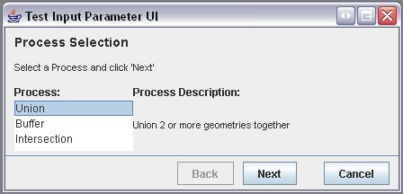

GUI¶
Once you have some processes implemented, there are various ways to execute them in the context of an application.
The process API uses Parameter to describe the available input parameters. You can use this with ** JParameterListWizard** to quickly accept input from a user.
Using Processes in a GUI¶
The following section explains how you might wrap this API into a GUI application, and provides a quick example of a working Swing GUI.
To help test the completeness of the Process Plugin, a quick Swing GUI was created.:
- This GUI lists all of the available processes and provides forms for users to enter the required parameters.
- It also executes the processes and displays the results.
This GUI was thrown together quickly for testing and so you may notice some layout issues and bugs while using it.
But it is a good example of how a GUI can be built on top of the Process API.
- You can examine the code in the the org.geotools.gui.swing.process package and you can run the application from the JProcessWizard.java class.
Screenshot of Wizard:
Some notes about this GUI:
the GUI is based on a Swing Wizard model
it should list all available processes implemented in the process API, so if you correctly add new ones they should also appear
it supports the ability to dynamically add new param widgets for inputs that can take any number of values
it currently creates input widgets for Doubles and Geometries, and falls back on the converter API for any other type
geometries are expected to be input in Well-Known-Text (WKT) format.
Example:
POLYGON((10 10, 5 5, 7 7, 10 10)) )
Feel free to add to this module for more extensive testing of the processes.